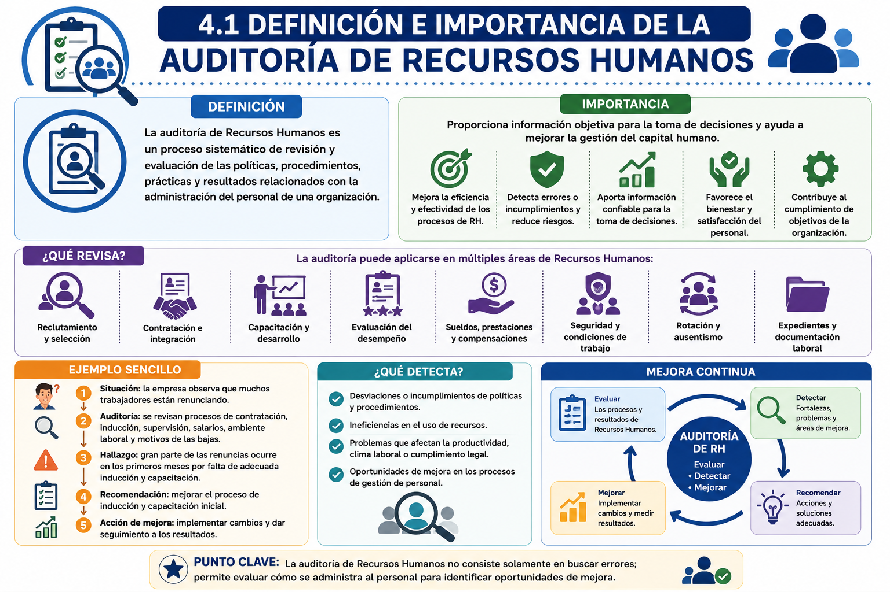
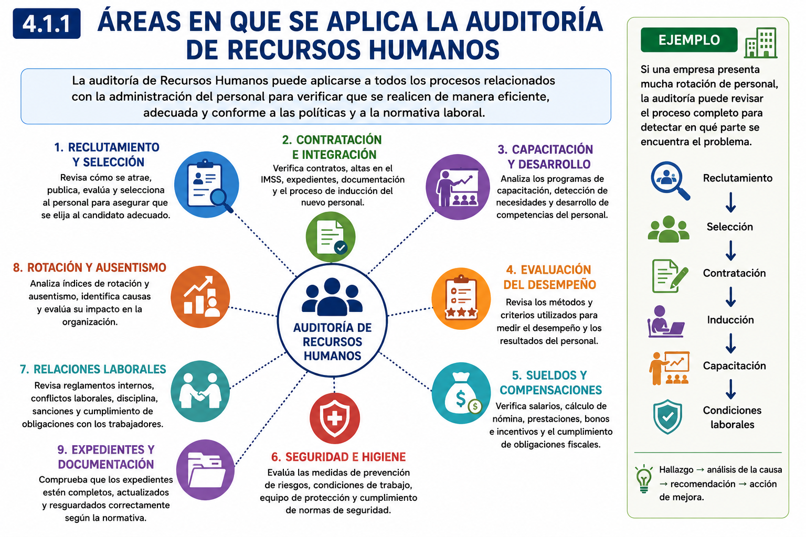
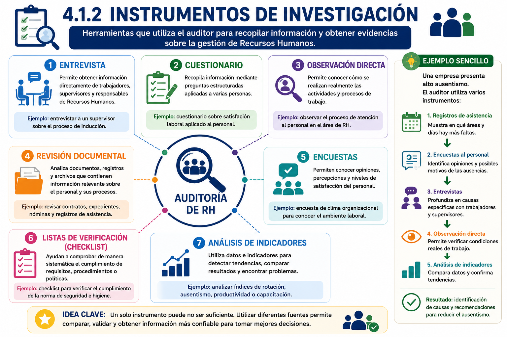
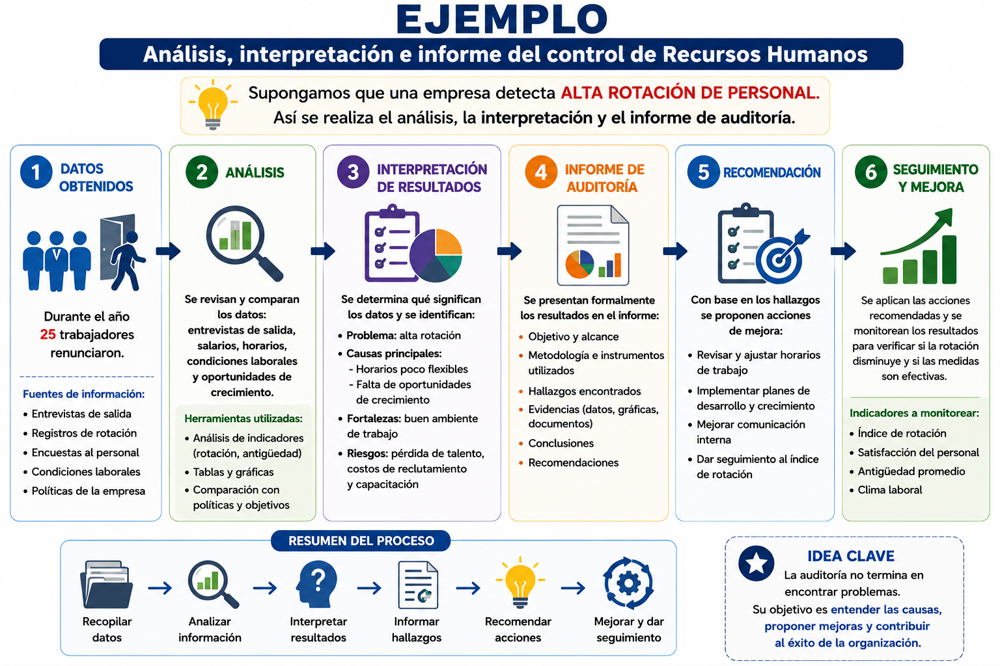
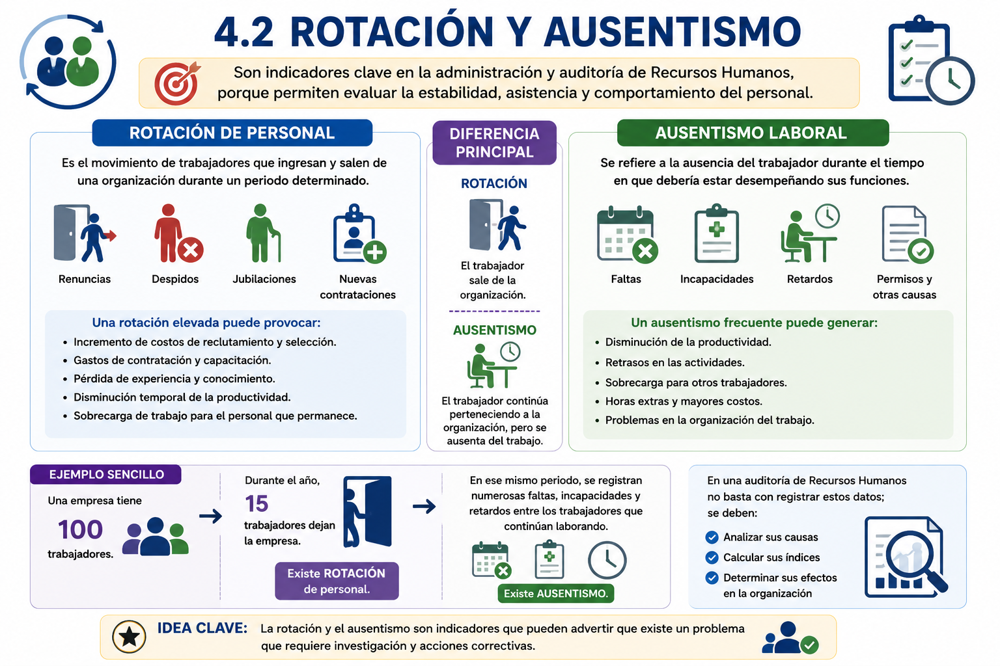
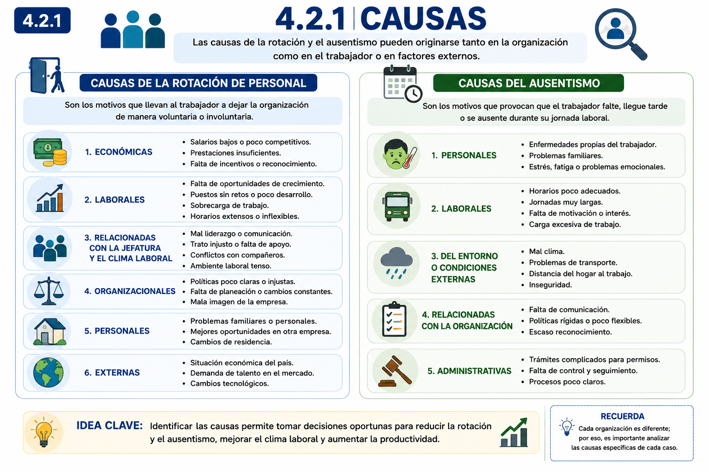
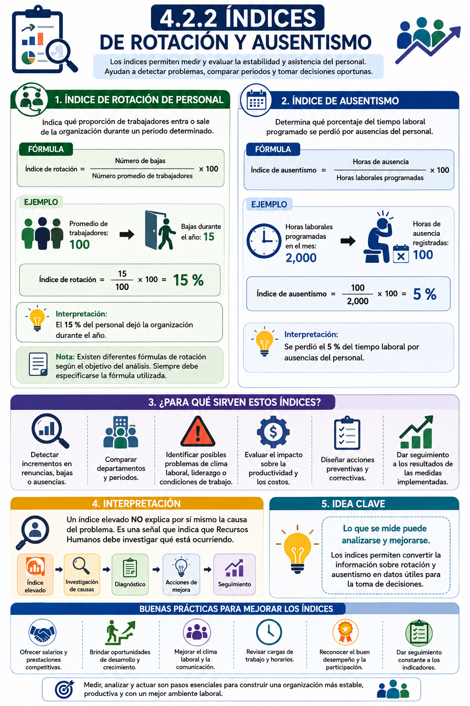
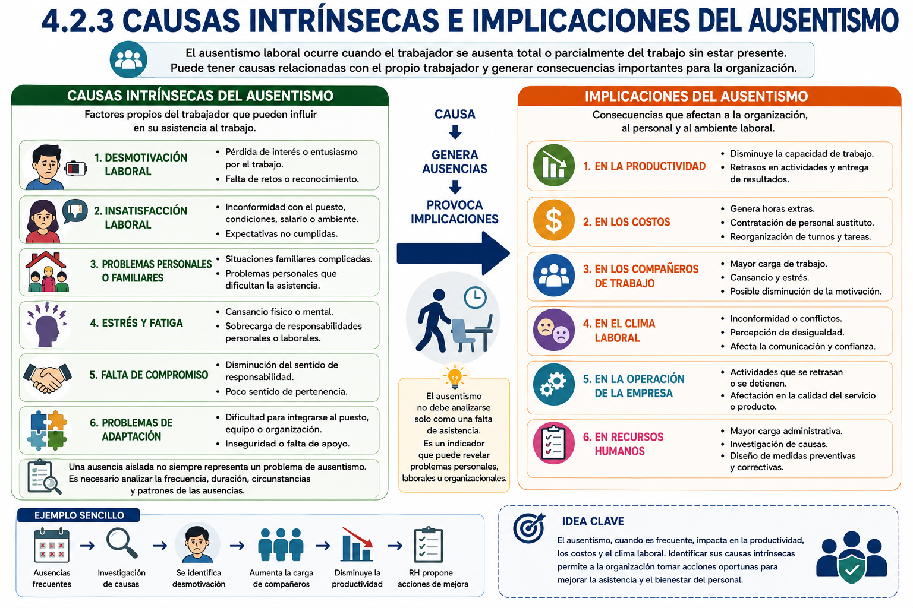

UNIDAD 4. AUDITORÍA DE RECURSOS HUMANOS
UNIDAD 4. AUDITORÍA DE RECURSOS HUMANOS
Introducción
La auditoría de Recursos Humanos es un proceso sistemático de revisión y evaluación de las políticas, procedimientos, prácticas y resultados relacionados con la administración del personal de una organización.
Su finalidad es determinar si las actividades de Recursos Humanos se realizan de manera adecuada, identificar desviaciones o áreas de mejora y proporcionar información que permita tomar mejores decisiones.
Una auditoría no busca únicamente encontrar errores; también permite reconocer fortalezas, prevenir problemas y mejorar la gestión del capital humano.
Objetivo de la unidad
Analizar la importancia y aplicación de la auditoría de Recursos Humanos, identificando las áreas que pueden evaluarse, los instrumentos utilizados para obtener información y el proceso para analizar e informar los resultados, así como comprender los fenómenos de rotación y ausentismo laboral, sus causas, índices e implicaciones.
¿Qué aprenderá el alumno?
Al finalizar la unidad, el alumno podrá:
- Definir qué es una auditoría de Recursos Humanos y explicar su importancia.
- Identificar las principales áreas en las que puede aplicarse.
- Reconocer diferentes instrumentos de investigación utilizados durante una auditoría.
- Analizar e interpretar información relacionada con la gestión de Recursos Humanos.
- Comprender la estructura básica de un informe de auditoría.
- Diferenciar rotación de personal y ausentismo laboral.
- Identificar sus principales causas.
- Comprender la utilidad de los índices de rotación y ausentismo.
- Analizar las consecuencias que estos fenómenos pueden generar en una organización.
TEMARIO DE UNIDAD 4
TEMARIO DE UNIDAD 4
4. AUDITORIA DE RECURSOS HUMANOS
4.1 Definición e importancia de la auditoria de recursos humanos
4.1.1 Áreas en que se aplica
4.1.2 Instrumentos de investigación
4.1.3 Análisis, interpretación e informe del control de Recursos Humanos
4.2 Rotación y ausentismo
4.2.1 Causas
4.2.2 Índices
4.2.3 Causas intrínsecas e implicaciones del ausentismo
4.1 Definición e importancia de la auditoría de Recursos Humanos
4.1 Definición e importancia de la auditoría de Recursos Humanos
La auditoría de Recursos Humanos es un proceso sistemático de revisión y evaluación de las políticas, procedimientos, prácticas y resultados relacionados con la administración del personal de una organización.
Permite determinar si las actividades del área de Recursos Humanos se realizan de manera eficiente, adecuada y conforme a las políticas internas y disposiciones aplicables.
¿Qué busca una auditoría de Recursos Humanos?
Su propósito principal es conocer cómo se está gestionando al personal y detectar tanto aspectos positivos como situaciones que necesitan corregirse. Por ejemplo, puede ayudar a identificar problemas en:
- Reclutamiento y selección.
- Contratación e integración del personal.
- Capacitación y desarrollo.
- Evaluación del desempeño.
- Sueldos, prestaciones y compensaciones.
- Seguridad y condiciones de trabajo.
- Rotación y ausentismo.
- Expedientes y documentación laboral.
Importancia
La auditoría de Recursos Humanos es importante porque proporciona información objetiva para la toma de decisiones. Permite detectar errores o incumplimientos, prevenir riesgos laborales y administrativos, mejorar procedimientos y utilizar de manera más eficiente los recursos destinados al personal.
También contribuye a determinar si las políticas de Recursos Humanos realmente están ayudando a alcanzar los objetivos de la organización.
Ejemplo sencillo
Una empresa observa que durante los últimos meses muchos trabajadores están renunciando.
En lugar de asumir que el problema es únicamente el salario, realiza una auditoría de Recursos Humanos y revisa contratación, inducción, supervisión, salarios, ambiente laboral, horarios y motivos de las bajas.
La revisión muestra que una parte importante de las renuncias ocurre durante los primeros meses porque los trabajadores no reciben una adecuada inducción y capacitación.
Hallazgo → análisis de la causa → recomendación → acción de mejora.
Punto clave para el alumno
La auditoría de Recursos Humanos no consiste solamente en buscar errores; permite evaluar cómo se administra al personal para identificar oportunidades de mejora.

4.1.1 Áreas en que se aplica la auditoría de Recursos Humanos
4.1.1 Áreas en que se aplica la auditoría de Recursos Humanos
La auditoría de Recursos Humanos puede aplicarse a prácticamente todos los procesos relacionados con la administración del personal. Su finalidad es verificar que las prácticas sean eficientes, adecuadas, consistentes con las políticas de la organización y acordes con la normativa laboral.
Las principales áreas son:
- Reclutamiento y selección: revisa cómo se atrae, evalúa y selecciona al personal.
- Contratación e integración: verifica contratos, expedientes, altas e inducción.
- Capacitación y desarrollo: analiza programas de formación y desarrollo del personal.
- Evaluación del desempeño: revisa los métodos utilizados para medir resultados y desempeño.
- Sueldos y compensaciones: verifica salarios, nómina, prestaciones e incentivos.
- Seguridad e higiene: evalúa medidas de prevención y condiciones de trabajo.
- Relaciones laborales: revisa reglamentos, conflictos, disciplina y cumplimiento de obligaciones.
- Rotación y ausentismo: analiza índices, causas y efectos sobre la organización.
- Expedientes y documentación: comprueba que la información laboral esté completa y actualizada.
Ejemplo: si una empresa presenta mucha rotación de personal, la auditoría puede revisar reclutamiento → selección → contratación → inducción → capacitación → condiciones laborales, para identificar en qué parte del proceso se encuentra el problema.

4.1.2 Instrumentos de investigación
4.1.2 Instrumentos de investigación
Los instrumentos de investigación en la auditoría de Recursos Humanos son las herramientas utilizadas por el auditor para recopilar información y obtener evidencias sobre la forma en que se administran los recursos humanos dentro de una organización.
Los principales instrumentos son:
- Entrevista: permite obtener información directamente de trabajadores, supervisores y responsables de Recursos Humanos.
- Cuestionario: recopila información mediante preguntas estructuradas aplicadas a varias personas.
- Observación directa: permite conocer cómo se realizan realmente las actividades y procesos de trabajo.
- Revisión documental: analiza expedientes, contratos, nóminas, registros de asistencia, evaluaciones, políticas y manuales.
- Encuestas: permiten conocer opiniones, percepciones y niveles de satisfacción del personal.
- Listas de verificación (checklist): ayudan a comprobar sistemáticamente el cumplimiento de requisitos, procedimientos o políticas.
- Análisis de indicadores: utiliza datos como rotación, ausentismo, productividad, accidentes, capacitación o desempeño para detectar tendencias y problemas.
Ejemplo sencillo
Una empresa presenta alto ausentismo. El auditor puede utilizar varios instrumentos:
Registros de asistencia → Encuesta al personal → Entrevistas → Observación → Análisis de indicadores → Identificación de causas.
Por ejemplo, los registros muestran en qué áreas existen más faltas; las encuestas y entrevistas ayudan a conocer los posibles motivos, y los indicadores permiten comparar los resultados.
Idea clave: un solo instrumento puede no ser suficiente. Utilizar diferentes fuentes permite comparar y validar la información obtenida.

4.1.3 Análisis, interpretación e informe del control de Recursos Humanos
4.1.3 Análisis, interpretación e informe del control de Recursos Humanos
Esta etapa de la auditoría permite transformar la información recopilada en conclusiones y recomendaciones útiles para mejorar la gestión del personal.
El proceso puede explicarse en tres etapas principales:
1. Análisis de la información
Se organizan y revisan los datos obtenidos mediante entrevistas, cuestionarios, observación, documentos e indicadores. Se comparan los resultados con políticas, procedimientos, objetivos y normas de la organización.
2. Interpretación de resultados
Se determina qué significan los datos obtenidos y se identifican:
- Problemas o desviaciones.
- Causas de los problemas.
- Fortalezas y áreas de oportunidad.
- Riesgos laborales o administrativos.
- Posibles consecuencias para la organización.
3. Elaboración del informe de auditoría
Se presentan formalmente los resultados. Generalmente incluye:
- Objetivo y alcance de la auditoría.
- Metodología e instrumentos utilizados.
- Hallazgos encontrados.
- Evidencias.
- Conclusiones.
- Recomendaciones y acciones de mejora.

4.2 Rotación y ausentismo
4.2 Rotación y ausentismo
La rotación y el ausentismo son indicadores importantes dentro de la administración y auditoría de Recursos Humanos, porque permiten evaluar la estabilidad, asistencia y comportamiento de la plantilla laboral. Cuando presentan niveles elevados, pueden ser señales de problemas relacionados con el clima laboral, liderazgo, condiciones de trabajo, remuneración o satisfacción del personal.
Rotación de personal
Es el movimiento de trabajadores que ingresan y salen de una organización durante un periodo determinado. Puede producirse por renuncias, despidos, jubilaciones, terminación de contratos o nuevas contrataciones.
Una rotación elevada puede provocar:
- Incremento de costos de reclutamiento y selección.
- Gastos de contratación y capacitación.
- Pérdida de experiencia y conocimiento.
- Disminución temporal de la productividad.
- Sobrecarga de trabajo para el personal que permanece.
Ausentismo laboral
Se refiere a la ausencia del trabajador durante el tiempo en que debería estar desempeñando sus funciones, ya sea por faltas, incapacidades, permisos, retardos u otras situaciones.
Cuando el ausentismo es frecuente puede generar:
- Disminución de la productividad.
- Retrasos en las actividades.
- Sobrecarga para otros trabajadores.
- Horas extras y mayores costos.
- Problemas en la organización del trabajo.
Diferencia principal
ROTACIÓN → el trabajador sale de la organización.
AUSENTISMO → el trabajador continúa perteneciendo a la organización, pero se ausenta del trabajo.
Ejemplo sencillo
Una empresa tiene 100 trabajadores.
Durante el año, 15 trabajadores dejan la empresa → existe rotación de personal.
En ese mismo periodo, se registran numerosas faltas, incapacidades y retardos entre los trabajadores que continúan laborando → existe ausentismo.
En una auditoría de Recursos Humanos no basta con registrar estos datos; se deben analizar sus causas, calcular sus índices y determinar sus efectos en la organización.
Idea clave: rotación y ausentismo son indicadores que pueden advertir que existe un problema que requiere investigación y acciones correctivas.

4.2.1 Causas de la rotación y el ausentismo
4.2.1 Causas de la rotación y el ausentismo
La rotación de personal y el ausentismo laboral pueden originarse por diferentes factores relacionados con el trabajador, las condiciones de trabajo, la administración de la empresa y el entorno. Identificar correctamente estas causas permite a Recursos Humanos establecer medidas preventivas y correctivas.
Causas de la rotación de personal
La rotación ocurre cuando los trabajadores dejan la organización, ya sea voluntaria o involuntariamente. Entre sus principales causas se encuentran:
Factores económicos. Los salarios poco competitivos, prestaciones insuficientes o falta de incentivos pueden provocar que los trabajadores busquen mejores oportunidades laborales.
Factores laborales. La sobrecarga de trabajo, horarios poco flexibles, falta de oportunidades de crecimiento o actividades poco satisfactorias pueden incrementar la intención de abandonar la organización.
Liderazgo y clima laboral. Una comunicación deficiente, conflictos entre compañeros, trato inadecuado o problemas con los superiores pueden afectar la satisfacción del trabajador.
Factores organizacionales. Las políticas poco claras, cambios constantes, falta de planeación o una deficiente administración del personal también pueden generar rotación.
Factores personales y externos. Cambios de residencia, situaciones familiares, desarrollo profesional, mejores ofertas laborales o condiciones económicas externas pueden influir en la decisión de dejar la empresa.
Causas del ausentismo laboral
El ausentismo ocurre cuando el trabajador continúa perteneciendo a la organización, pero no se presenta a trabajar o se ausenta durante su jornada laboral.
Entre sus causas principales se encuentran:
Personales: problemas familiares, situaciones personales, fatiga u otras circunstancias que dificultan la asistencia.
Laborales: jornadas extensas, horarios inadecuados, exceso de trabajo, desmotivación o insatisfacción laboral.
Condiciones externas: problemas de transporte, distancia entre el hogar y el centro de trabajo, condiciones climáticas u otras situaciones externas.
Organizacionales: falta de comunicación, políticas rígidas, poco reconocimiento y deficiencias en el ambiente de trabajo.
Importancia de identificar las causas
Recursos Humanos no debe limitarse a registrar cuántas personas renuncian o faltan. Es necesario investigar por qué está sucediendo, ya que una rotación o un ausentismo elevados pueden ser síntomas de problemas internos.
Por ejemplo, si varios trabajadores renuncian durante pocos meses, la organización podría analizar entrevistas de salida, salarios, liderazgo, horarios y oportunidades de crecimiento para encontrar causas comunes.
Idea clave: identificar las causas permite implementar acciones que contribuyan a disminuir la rotación y el ausentismo, mejorar el clima laboral y reducir costos para la organización.

4.2.2 Índices de rotación y ausentismo
4.2.2 Índices de rotación y ausentismo
Los índices de rotación y ausentismo son indicadores cuantitativos utilizados por Recursos Humanos para medir la estabilidad y asistencia del personal. Permiten identificar tendencias, comparar periodos y detectar situaciones que pueden afectar la productividad y los costos de la organización.
Índice de rotación de personal
El índice de rotación permite conocer qué proporción de trabajadores entra o sale de una organización durante un periodo determinado.
Una forma sencilla de calcularlo cuando se desea analizar las bajas de personal es:
Índice de rotación = (Número de bajas ÷ Número promedio de trabajadores) × 100
Ejemplo:
Una empresa tiene un promedio de 100 trabajadores y durante el año se registraron 15 bajas.
(15 ÷ 100) × 100 = 15 %
Por lo tanto, el índice de rotación es del 15 %.
Nota: existen distintas fórmulas de rotación según lo que la organización quiera medir. Por ello, siempre debe especificarse la fórmula utilizada.
Índice de ausentismo
El índice de ausentismo permite determinar qué porcentaje del tiempo laboral programado se perdió debido a las ausencias de los trabajadores.
Índice de ausentismo = (Horas de ausencia ÷ Horas laborales programadas) × 100
Ejemplo:
Durante un mes estaban programadas 2,000 horas de trabajo, pero se registraron 100 horas de ausencia.
(100 ÷ 2,000) × 100 = 5 %
El índice de ausentismo es del 5 %.
¿Para qué sirven estos índices?
Su análisis permite a Recursos Humanos:
- Detectar incrementos en renuncias, bajas o ausencias.
- Comparar departamentos y periodos.
- Identificar posibles problemas de clima laboral, liderazgo o condiciones de trabajo.
- Evaluar el impacto sobre la productividad.
- Diseñar acciones preventivas y correctivas.
- Dar seguimiento a los resultados de las medidas implementadas.
Interpretación
Un índice elevado no explica por sí mismo la causa del problema. Funciona como una señal que indica que Recursos Humanos debe investigar qué está ocurriendo.
Por ejemplo:
Índice elevado → Investigación de causas → Diagnóstico → Acciones de mejora → Seguimiento
Idea clave: lo que se mide puede analizarse y mejorarse. Los índices permiten convertir la información sobre rotación y ausentismo en datos útiles para la toma de decisiones.

4.2.3 Causas intrínsecas e implicaciones del ausentismo
4.2.3 Causas intrínsecas e implicaciones del ausentismo
El ausentismo laboral puede estar relacionado con factores propios del trabajador y con situaciones derivadas de su relación con el trabajo. Cuando las ausencias se presentan de manera frecuente, pueden generar consecuencias tanto para la organización como para los demás trabajadores.
Causas intrínsecas del ausentismo
Las causas intrínsecas son aquellas vinculadas directamente con características, circunstancias, actitudes o condiciones personales del trabajador que pueden influir en su asistencia.
Entre las principales se encuentran:
- Desmotivación laboral: pérdida de interés o compromiso con el trabajo.
- Insatisfacción laboral: inconformidad con las funciones, condiciones o ambiente de trabajo.
- Problemas personales o familiares: situaciones que dificultan la asistencia regular.
- Estrés y fatiga: agotamiento relacionado con las exigencias personales o laborales.
- Falta de compromiso: disminución del sentido de responsabilidad o pertenencia hacia la organización.
- Problemas de adaptación: dificultad para integrarse al puesto, equipo o dinámica de trabajo.
Es importante considerar que una ausencia aislada no necesariamente representa un problema de ausentismo. Recursos Humanos debe analizar la frecuencia, duración, circunstancias y patrones de las ausencias.
Implicaciones del ausentismo
Cuando el ausentismo aumenta, puede afectar diferentes áreas de la organización.
En la productividad: disminuye la capacidad de trabajo y pueden presentarse retrasos en las actividades.
En los costos: puede generar horas extras, contratación de personal sustituto o reorganización de turnos.
En los compañeros: quienes permanecen trabajando pueden recibir una mayor carga de actividades.
En el clima laboral: las ausencias frecuentes pueden generar inconformidad, conflictos o percepción de desigualdad.
En la operación: determinadas actividades pueden retrasarse o incluso detenerse cuando falta personal indispensable.
En Recursos Humanos: aumenta la necesidad de controlar asistencias, investigar causas y establecer medidas preventivas o correctivas.
Ejemplo sencillo
Una empresa detecta que un trabajador presenta ausencias frecuentes.
Ausencias frecuentes → Investigación → Se identifica desmotivación laboral → Aumenta la carga de sus compañeros → Disminuye la productividad → Recursos Humanos propone acciones de mejora.
Idea clave
El ausentismo no debe analizarse únicamente como una falta de asistencia. Es un indicador que puede revelar problemas personales, laborales u organizacionales y producir efectos importantes en la productividad, los costos y el clima laboral.
